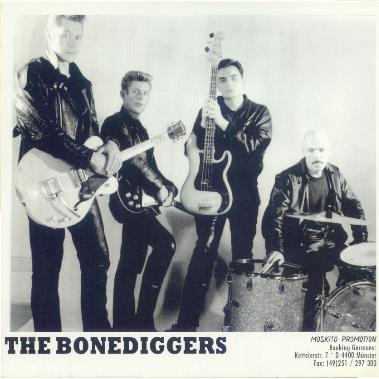

THE BONEDIGGERS

The Bonediggers started out as a group of friends playing in pubs for free beer. They then started writing together and began to take things more seriously.
Their sound was a mixture of country, punk and blues with a little bit of ska for good measure.
The group played locally around Coventry but had little success throughout the rest of the UK. They were far more popular in Europe especially France and Germany. They eventually broke up in 1989.
Band line-up
Roddy – lead vocals/guitar
Dave West – guitar/vocals
Garry Muldoon – drums
Sam Smith - bass